d <- rio::import("adat/faktor_szorongas.xlsx")
str(d)
#> 'data.frame': 10 obs. of 6 variables:
#> $ v1: num 2 5 4 7 3 5 4 7 2 3
#> $ v2: num 3 5 4 7 4 5 6 4 2 3
#> $ v3: num 2 4 3 7 4 5 6 4 2 3
#> $ v4: num 5 2 4 7 2 3 5 7 4 1
#> $ v5: num 4 1 4 7 2 3 5 6 4 1
#> $ v6: num 4 7 4 1 7 5 3 1 4 7
d
#> v1 v2 v3 v4 v5 v6
#> 1 2 3 2 5 4 4
#> 2 5 5 4 2 1 7
#> 3 4 4 3 4 4 4
#> 4 7 7 7 7 7 1
#> 5 3 4 4 2 2 7
#> 6 5 5 5 3 3 5
#> 7 4 6 6 5 5 3
#> 8 7 4 4 7 6 1
#> 9 2 2 2 4 4 4
#> 10 3 3 3 1 1 74 Feltáró faktorelemzés
A feltáró faktorelemzést új faktorok létrehozására használjuk, a megerősítő faktorelemzést egy meglévő modell tesztelésére (lásd következő fejezet). Ebben a fejezetben faktorelemzés alatt a feltáró faktorelemzést értjük (Rózsa és mtsai., 2019; Watkins, 2018).
A lineáris regresszióelemzéstől eltérően a főkomponens- és a faktorelemzés nagy számú változó kölcsönös összefüggésén alapuló módszer, így nincsenek függő vagy független változóink. Elemzéskor a változók korrelációs mátrixából indulunk ki.
4.1 A főkomponens elemzés és a faktorelemzés összehasonlítása
- A főkomponens elemzés során az adatok teljes varianciáját vesszük figyelembe, míg faktorelemzés során a faktorokat csak a közös variancia alapján becsüljük. A két eljárás egyébként nagyon hasonló elvekre épül.
- Főkomponens elemzés során a korrelációs mátrix átlójában lévő 1-esek összege adja teljes varianciát, ami teljes egészében bekerül a faktormodellbe. Ezért ez az eljárás akkor javasolt, ha a fő cél, hogy meghatározzuk azon főkomponensek (faktorok) legkisebb számát, amelyek a legtöbb varianciát magyarázzák. Ezek a faktorok később jól alkalmazhatók többváltozós elemzésekben. Összegezve: a főkomponens elemzésnél részinformációkat próbálunk összegezni a lehető legkisebb információveszteséggel (vagyis a variancia maximalizálásával).
- Az ún. közös faktorelemzésnél a faktorokat csak a közös variancia alapján becsüljük, vagyis a kommunalitások kerülnek a korrelációs mátrix átlójába (ezek 1-nél kisebb számok). Összegezve a faktorelemzés általános célja egy látens, lineáris struktúra feltárása manifeszt változók segítségével.
4.2 Fogalmak
A főkomponens- és fakorelemzésben a következő fogalmak fordulnak elő (a komponens és a faktor szavak felcserélhetők, attól függően, hogy főkomponens- vagy fakorelemzésről van szó).
- Kommuninalitás: a variancia azon hányada, amelyen egy változó osztozik a többi elemzésbe vont változóval. Ez egyben a közös faktorok által magyarázott variancia aránya.
- Sajátérték: Az egyes faktorok által magyarázott teljes varianciát fejezi ki.
- Faktorsúly: A változók és a faktorok közötti közönséges korreláció.
- Faktormátrix: Valamennyi változónak az összes előállított faktorra vonatkozó faktorsúlyát tartalmazza.
- Faktorértékek: Az előállított faktoroknak az egyes megkérdezettekre vonatkozóan becsült értékei.
- Sajátértékábra (scree-plot, kőtörmelék ábra): A sajátértékek ábrázolása az előállított faktorok sorszámának függvényében.
- Varianciahányad: A teljes variancia egy adott faktornak tulajdonított része százalékban kifejezve.
4.3 A faktormodell
A főkomponens és faktorelemzés annyiban hasonlít a többszörös regressziószámításhoz, hogy minden változót kifejezhető a háttérben meghúzódó faktorok lineáris kombinációjaként. Minden egyes változó kifejezhető kisszámú közös faktor és egy egyedi faktor segítségével. Ezek a faktorok nem figyelhetők meg közvetlenül. Standardizált kiinduló változók esetén a faktormodell így írható fel:
\(X_i=A_{i1} F_1+A_{i2} F_2+\dots+ A_{im} F_m+V_i U_i\), ahol
- \(X_i\) az \(i.\) standardizált változó
- \(A_{i1}\) az \(i.\) változó \(j.\) közös faktorra vonatkozó többszörös standardizált parciális regressziós együtthatója
- \(F_j\) a \(j.\) közös faktor
- \(V_i\) az \(i.\) változó \(j.\) egyedi faktorra vonatkozó többszörös standardizált parciális regressziós együtthatója
- \(U_i\) az \(i.\) változó egyedi faktora
- \(m\) a közös faktorok száma.
Az egyedi faktorok egymással és a közös faktorokkal is korrelálatlanok. A közös faktorok kifejezhetők a megfigyelt változók lineáris kombinációiként:
- \(F_i=W_{i1} X_1+W_i2 X_2+\dots+ W_im X_m+\dots+ W_ik X_k\), ahol
- \(F_i\) az \(i.\) faktor becslése
- \(W_i\) súly vagy a faktorérték együtthatója
- \(k\) a változók száma
A súlyokat vagy faktorérték együtthatókat úgy is meg lehet választani, hogy az első faktor magyarázza a teljes variancia legnagyobb részét, a második faktor a második legnagyobb részét és így tovább, valamint, hogy a faktorok korrelálatlanok legyenek egymással. Ez történik főkomponens elemzés esetén.
4.4 A faktorelmzés menete
1. A probléma megfogalmazása
A kutató arra volt kíváncsi, milyen előnyöket keresnek a fogyasztók a fogrémvásárlásnál. Egy 30 fős mintán a válaszadókat arra kérték, hogy jelezzék, mennyire értenek egyet a következő állításokkal (1 = egyáltalán nem ért egyet; 7 = teljes mértékben egyetért)
- v1: Fontos, hogy olyan fogkrémet vásároljak, amellyel megelőzhető a fogszuvasodás.
- v2: Az olyan fogkrémeket szeretem, amely fényessé teszi a fogaimat.
- v3: Egy fogkrémnek erősítenie kell a fogínyt.
- v4: Az olyan fogkrémeket szeretem, amely friss leheletet biztosít.
- v5: A fog romlásának megelőzése számomra nem fontos elvárás.
- v6: A legfontosabb szempont a fogkrém vásárlásánál a szép fog.
2. A korrelációs mátrix előállítása
A korrelációs mátrix előállítása során arra számítunk, hogy azok a változók, amelyek között magas a korreláció, ugyanazzal a faktorral fognak korrelálni.
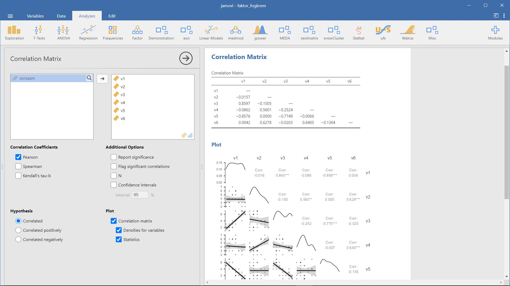
A fogkrémvásárlás során keresett előnyök korrelációs mátrix tanulmányozásával látható:
- viszonylag magas a korreláció a v1 (fogszuvasodás megelőzése), v3 (erős fogíny) és v5 (a fog romlásának megelőzése) között. Arra számítunk, hogy ezek a változók ugyanazokkal a faktorokkal fognak korrelálni.
- viszonylag magas a korreláció a v2 (fényes fogak), v4 (friss lehelet) és v6 (szép fogak) változók között, ezek is feltehetőleg ugyanazokkal a faktorokkal fognak korrelálni.
3. Az alkalmazási feltételek ellenőrzése
Ahhoz, hogy a faktorelemzés alkalmazható legyen, a változóknak korrelálniuk kell egymással. Erről meggyőződhetünk kétféle objektív módszerrel is:
- Bartlett-féle szferikus próba: nullhipotézise szerint a korrelációs mátrix egységmátrix (a változók korrelálatlanok), azaz az átlón kívül minden elem nulla. Amennyiben a nullhipotézis nem vethető el, a faktorelemzés alkalmazhatósága megkérdőjelezhető.
- Kaiser-Meyer-Olkin-féle megfelelőségi mutató: a megfigyelt korrelációs együtthatók nagyságát viszonyítja a parciális korrelációs együtthatók nagyságához. Az alacsony KMO-mutató azt jelzi, hogy a változópárok közötti korreláció nem magyarázható más változókkal, így a faktorelemzés nem megfelelő módszer. Általában 0,5 fölött érték kívánatos.
Jamovi-ban a Factor / Exploratory Factor Analysis menüpontban tudjuk a fenti vizsgálatokat elvégezni.
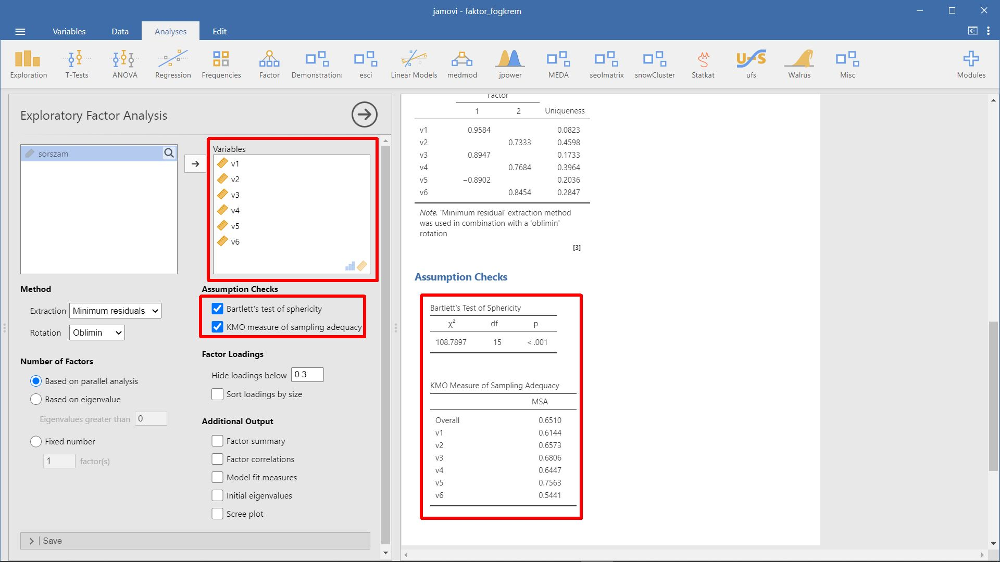 A Bartlett-féle szferikus próba szerint a pupulációban a korrelációs mátrix nem egységmátrix (ez számunkra kedvező), valamint a KMO-érték 0,66, ameéy elég magas (>0,5), így megállapíthatjuk, hogy a faktorelemzés alkalmas módszer a korrelációs mátrix elemzésére.
4. A faktorelemzés módszerének meghatározása
A faktorelemzés egyes módszerei abban különböznek egymástól, hogy milyen módon határozzák meg a súlyokat vagy faktorérték együtthatókat.
A jamovi 3 módszert ismer a közös faktorok becslésére:
- Principal axis – főtengelyelemzés
- Minimum residuals
- Maximum likelihood
5. A faktorok számának meghatározása
A faktorelemzés akkor ér célt, ha a változók számánál kevesebb számú közös faktort hozunk létre. De mi legyen ez a szám. Több eljárás létezik. Ezeket részletesen a főkomponens elemzés során bemutattuk. Itt csak felsoroljuk őket:
- Horn-féle párhuzamos analízis (jamovi-ban:
Based on parallel analysis) - A priori meghatározás (jamovi-ban:
Fixed number) - Sajátértéken alapuló megoldás (jamovi-ban:
Based on eigenvalue) - Sajátértékábrán (scree-plot, kőtörmelék ábra) alapuló meghatározás (jamovi-ban:
Scree plot) - Magyarázott varianciahányadon alapuló meghatározás (jamovi-ban:
Component summary)
6. A faktorok forgatása
A faktorelemzés fontos eredménye a faktormátrix (jamovi-ban: Factor Loadings).
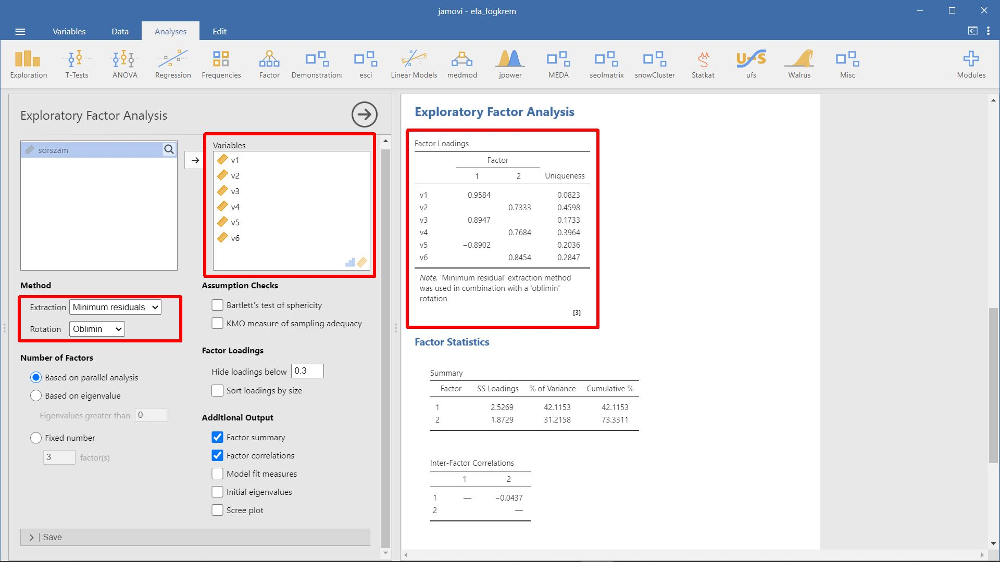
A faktormátrix tartalmazza azokat az együtthatókat, amelyekkel a standardizált változókat ki lehet fejezni a faktorokkal. Ezeket az együtthatókat faktorsúlyoknak nevezzük, a faktorok és a faktorsúlyok közötti korrelációt mutatják. A magas abszolút értékű együttható azt jelzi, hogy a faktor és a változó szorosan összefügg. A faktormátrix együttható alapján lehet a faktorokat értelmezni.
A kiinduló vagy rotálatlan faktormátrix jelzi ugyan az egyes változók és a faktorok kapcsolatát, de ritkán eredményez könnyen értelmezhető faktorokat. Ennek főképp az az oka, hogy a faktorok túl sok változóval korrelálnak. (A rotálatlan faktormátrix beállításához jamovi-ban a Rotation: None beállítást használjuk.)
A faktorok forgatásával a faktormátrix egyszerűbbé, könnyebben értelmezhetővé válik. A faktorok forgatásával szeretnénk elérni:
- minden faktor csak néhány vátozóra rendelkezzen szignifikánsan nem nulla súllyal
- minden változónak lehetőleg egy faktorral legyen nem nulla, azaz szignifikáns faktorsúlya.
A forgatás nem érinti a kommunalitásokat és a magyarázott varianciahányadot, azonban az egy faktor által magyarázott varianciahányad változik (és természetesen a faktorsúlyok is).
A forgatási módszereket érdemes jól megválasztani, mert más-más faktorok azonosításához vezetnek.
Az ortogonális (derékszögű) forgatási eljárások egymással nem korreláló faktorokat eredményeznek.
Ezek közül az egyik legnépszerűbb a Varimax eljárás, amely minimalizálja a nagy faktorsúllyal rendelkező változók számát, így segíti a faktorok értelmezését. A magyarázott variancia egyenletesen próbálja elosztani a faktorok között.
A Quartimax eljárás első faktorként egy általános faktort faktort hoz létre, amellyel szinte mindegyik változó magasan korrelál.
A ferdeszögű forgatási eljárások során a tengelyek hegyeszöget zárnak be egymással, és a kapott faktorok korrelálni fognak egymással. Ferdeszögű forgatást akkor kell használni, ha feltételezhető, hogy a sokaságban a faktorok erősen összefüggenek.
A Promax eljárás gyorsan lefuttatható, amely főképp nagy adatbázisoknál jelent előnyt.
A Simplimax a Promax egy módosított formája.
Az Oblimin eljárás a tengelyek egymással bezárt szögét fokozatosan változtatja, ami egyben a faktorok korreláltságát is meghatározza.
7. A faktorok értelmezése
Az értelmezést megkönnyíti, ha meghatározzuk azokat a változókat, amelyeknek ugyanazon a faktorra nagy a súlyuk. A faktort a magas faktorsúlyú változók alapján lehet értelmezni.
Az 1. faktornak magasabb az együtthatói a v1 (fugszuvasodás megelőzése), v3 (erős fogíny) változókkal, negatív az együttható a v5 (a fog romlásának megeleőzése nem fontos) változó esetében. Ezt a faktort az “egészséggel kapcsolatos előnyöknek” nevezhetjük. A 2. faktor a v2 (fényes fogak), a v4 (friss lehelet), v6 (szép fogak) változókkal függ össze. Ezt a 2. faktort “társadalmi előnyök”-nek nevezhetjük.
Összegezve, a fogyasztók feltehetőleg két fő előnyt keresnek a fogkrémvásárlás során: egészséggel kapcsolatos és társadalmi előnyöket.
8. A faktorértékek kiszámítása
A faktorelemzésnek önmagában is van értelme, hiszen látens változók azonosításához vezet, azonban hasznos lehet a későbbi elemzések számára a faktorértékek kiszámítása minden egyes megkérdezettre. A faktor az eredeti változók lineáris kombinációja. A standardizált változó értékeinek és a megfelelő faktorérték-együtthatónak a szorzata adja a faktorétéket, amely jelen példában minden válaszadóra két faktorértéket jelent. A faktorérték csak főkomponens elemzés esetében lehet pontosan kiszámítani, egyébként csak közelítő értékeket kapunk.
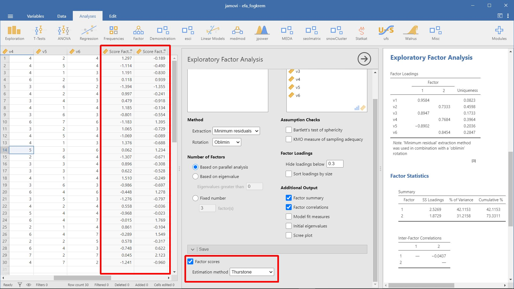
4.5 Illeszkedési mutatók
CFI - összehasonlító illeszkedési mutató (Comparative Fit Index) - A CFI azt méri fel, hogy egy feltételezett hipotetikus modell milyen mértékben reprodukálja a valós adatokon nyugvó kovarianciamátrixot egy független modellhez képest.
TLI - Tucker–Lewis-féle Illeszkedési mutató - A TLI a CFI-hez hasonló módon méri az illeszkedést, annyi különbséggel, hogy ez a mutató a modellben használt szabadságfokot is figyelembe veszi, így kiküszöböli a vizsgálati minta méretének befolyásoló szerepét
A CFI és TLI mutatók értéke 0 és 1 közötti tartományba eshet, ahol az 1-hez közeli érték jelzi a szoros illeszkedést. Kezdetben a mutatók elfogadhatósági kritériumának 0,90-et adtak meg, de az utóbbi időkben inkább a 0,95-ot tekintik az elfogadhatóság alsó határának.
- RMSEA - a becslési hiba négyzetes átlagának gyöke (Root-Mean-Square Error of Approximation) - A Steiger-féle RMSEA mutatót a modell populációs kovariancia mátrixhoz viszonyított illeszkedésének becsléséhez használjuk. Az RMSEA az elemszámtól függetlenül hasonlítja össze, hogy a valós és az optimális paraméterekkel rendelkező hipotetikus modell kovarianciamátrixa milyen mértékben illeszkedik. Az RMSEA a modell takarékosságának megbízható jelzője, a komplex modellek hibás specifikálásának hatékony mutatója. Az RMSEA értéke is 0 és 1 közé eshet, itt azonban a kisebb, 0-hoz közel eső érték jelzi a jobb illeszkedést. Az RMSEA értékei 0,05-ig szoros illeszkedést jeleznek; 0,08-os értékig pedig megfelelő illeszkedést.
Model Test
Az adatok és a teoretikus modell egybeesésének vizsgálata. Az egyik leggyakrabban használt illeszkedési mutató a \(\chi^2\)-próba mértéke, amelyet általában akkor tekinthetünk elfogadhatónak, ha a szabadságfokhoz viszonyított értéke alacsony (pl. kisebb, mint a szabadságfok kétszerese) és nem szignifikáns (p > 0,05). Ennek a mutatónak azonban több korlátja létezik. A legjellemzőbbek a többváltozós normalitás sérülésére és a mintanagyságra való érzékenység. Számos empirikus eredmény és szimulációs vizsgálat támasztja alá, hogy a normalitás sérülésekor vagy nagy elemszámú minta esetében a \(\chi^2\)-próba kevésbé informatív, és a legtöbb esetben a modell elvetését jelzi. A mintanagyságból fakadó korlátot gyakran a \(\chi^2\)-próba szabadságfokhoz mért arányával próbálják kompenzálni (\(\chi^2\)/szabadságfok), amelynek ugyan nincs pontos kritériuma, de az ajánlások általában 2-től 5-ig terjednek, és a határérték alatti érték jelez megfelelő illeszkedést.
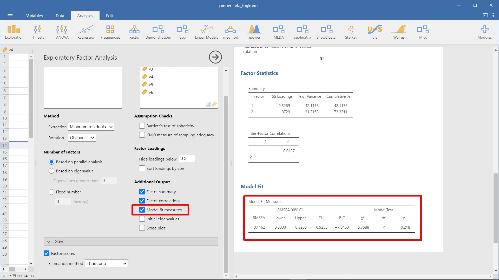
4.6 Példa: Vonás- és állapot-szorongás
- A példa forrása: Münnich és mtsai. (2006) 3.2 fejezet
- Kapcsolódó jamovi állomány:
faktor_szorongas.omv
Az adatbázisunkban ún. állapot- és vonás-szorongásra vonatkozó (hipotetikus) adatokat találunk. Az első 3 item az állapot-szorongásra, míg a többi 3 item a vonás-szorongásra irányul. A következő kérdésekre vártunk választ a felmérésben:
v1: Nyugtalan vagyok.
v2: Aggódom.
v3: Félek, hogy valami baj fog történni.
v4: Hajlamos vagyok mindent a szívemre venni.
v5: Szerintem csupa nehézségből áll az életem.
v6: Ennél könnyebb életem nem is lehetne.
v1-v3: állapot-szorongás
v4-v6: vonás-szorongás
Az adatok a faktor_szorongas.xlsx állományban találhatók.
Mivel a faktoranalízis is a korrelációs mátrixból indul ki - a főkomponens-analízishez hasonlóan -, így elsőként az adatok korrelációs mátrixát érdemes megvizsgálni
print(cor(d), digits = 2)
#> v1 v2 v3 v4 v5 v6
#> v1 1.00 0.71 0.71 0.54 0.51 -0.56
#> v2 0.71 1.00 0.96 0.36 0.40 -0.36
#> v3 0.71 0.96 1.00 0.36 0.44 -0.39
#> v4 0.54 0.36 0.36 1.00 0.97 -0.98
#> v5 0.51 0.40 0.44 0.97 1.00 -0.98
#> v6 -0.56 -0.36 -0.39 -0.98 -0.98 1.00A korrelációs mátrix értékei azt sugallják, hogy két faktort azonosíthatunk.
Először a forgatás előtti faktorokat vizsgáljuk meg.
fa_1 <- factanal(d, factors = 2, rotation = "none")
fa_1
#>
#> Call:
#> factanal(x = d, factors = 2, rotation = "none")
#>
#> Uniquenesses:
#> v1 v2 v3 v4 v5 v6
#> 0.408 0.081 0.005 0.030 0.022 0.009
#>
#> Loadings:
#> Factor1 Factor2
#> v1 0.763 0.102
#> v2 0.830 0.479
#> v3 0.871 0.486
#> v4 0.765 -0.620
#> v5 0.817 -0.558
#> v6 -0.788 0.609
#>
#> Factor1 Factor2
#> SS loadings 3.904 1.541
#> Proportion Var 0.651 0.257
#> Cumulative Var 0.651 0.908
#>
#> Test of the hypothesis that 2 factors are sufficient.
#> The chi square statistic is 5.27 on 4 degrees of freedom.
#> The p-value is 0.261A fenti outputban láthatjuk a forgatás előtti faktorok adatait. Elsőként az egyes változók egyedi hatását, az egyedi fakorokat láthatjuk a „uniquenesses” címszó alatt. A „loadings” címszóval a faktorsúlyokat jelölik. A forgatás nélküli faktorok esetében több olyan változó van, amely mindkét faktorral erős kapcsolatban van. Ilyen például a v6 változó, amely faktorsúlya az első faktornál -0,788, a második faktornál pedig 0,609. Ezáltal a vizsgált látens struktúra kevésbé áttekinthető.
A faktoranalízis modelljének végtelen számú alternatív megoldása van, és ez vezet a faktoranalízis második lépéséhez, amelyet faktor-rotációnak, vagy faktorforgatásnak hívnak.
A lenti kódban kétfaktoros megoldást kértünk, a forgatásnál a “varimax” módszert, míg az egyes személyek faktorértékeinek kiszámításánál a Bartlett-módszert alkalmazzuk.
fa_2 <- factanal(d, factors = 2, rotation = "varimax", scores = "Bartlett")
fa_2
#>
#> Call:
#> factanal(x = d, factors = 2, scores = "Bartlett", rotation = ...
#>
#> Uniquenesses:
#> v1 v2 v3 v4 v5 v6
#> 0.408 0.081 0.005 0.030 0.022 0.009
#>
#> Loadings:
#> Factor1 Factor2
#> v1 0.404 0.655
#> v2 0.155 0.946
#> v3 0.175 0.982
#> v4 0.964 0.200
#> v5 0.949 0.280
#> v6 -0.970 -0.225
#>
#> Factor1 Factor2
#> SS loadings 2.988 2.457
#> Proportion Var 0.498 0.410
#> Cumulative Var 0.498 0.908
#>
#> Test of the hypothesis that 2 factors are sufficient.
#> The chi square statistic is 5.27 on 4 degrees of freedom.
#> The p-value is 0.261A fenti outputban elsőként az egyes változók egyedi hatását, az egyedi fakorokat láthatjuk a „uniquenesses” címszó alatt. A egyedi faktorok és a kommunalitások kapcsolatban vannak egymással, összegük 1. Minél nagyobb egy változó egyedi faktorbeli értéke, annál kisebb lesz a kommunalitása, és minél nagyobb a kommunalitás értéke, annál nagyobb mértékben őrzi meg a faktor az eredeti változók szórását.
kommunalitas <- 1 - fa_2$uniquenesses
print(kommunalitas, digits = 2)
#> v1 v2 v3 v4 v5 v6
#> 0.59 0.92 0.99 0.97 0.98 0.99Az egyes változók kommunalitását a fenti output tartalmazza. Láthatjuk, hogy a faktorok a legjobban a v6-os változó szórását őrizték meg, legkevésbé pedig az első (v1) itemét, hiszen ezek kommunalitása a legnagyobb, illetve a legkisebb. Mindez arra utal, hogy a faktorok az utolsó itemből származó információkat őrizték meg a leginkább, és az első itemből származókat a legkevésbé.
Az egyedi faktorok után a “loadings” címszóval a faktorsúlyokat láthatjuk. A faktorsúlyok mutatják az egyes változók faktorokhoz való relatív hozzájárulását, a változók és a faktor közötti korrelációt. Ezek az értékek a már rotált faktorsúlyok. A faktorsúlyok megerősítik a korrelációs mátrix alapján felállított hipotézisünket, mely szerint két faktoros modell illeszkedik az adatokra. A v1-v3 faktor a második faktornál, míg a v4-v6 az első faktornál szerepel nagyobb súllyal. A v6 item faktorsúlya negatív előjelű, ennek oka, hogy fordított itemről van szó.
Ezután a főkomponens-analízisből már ismert varianciák és magyarázott varianciahányadok szerepelnek. A táblázatban látható, hogy az első faktor varianciája majdnem 3, míg a második faktoré 2,5 (“SS loadings”). Az első faktor a varianciahányad közel 50%-át magyarázza, míg a második a 41%-át („Proportion var”). A „Cumulative var” sor mutatja, hogy a két faktor összesen az összvariancia 91%-át magyarázza.
Az eredmény utolsó soraiban egy khi-négyzet próbát látunk, amely azt teszteli, hogy illeszkedik-e az adatokra az általunk választott kétfaktoros modell. Ha a tesztstatisztika értéke túl nagy, akkor nem illeszkedik a modell, egy másik megoldást kell választanunk. A khi-négyzet statisztika értéke a mintára 5,27, 4 szabadsági fokkal, a hozzá tartozó valószínűség p=0,261. Mivel jelen esetben p>0,05, így megtartjuk a null-hipotézist, vagyis a kétfaktoros modell valóban jól illeszkedik az adatokra. A két faktort pedig a faktorsúlyoknál vizsgált szerkezet alapján a következőképpen nevezhetjük el: mivel az első három változó a második faktorral mutat szorosabb kapcsolatot, így azt elnevezhetjük az állapot-szorongás faktorának, míg az első faktort - amely a második három változóval mutat szorosabb kapcsolatot - a vonás-szorongásnak.
Összegezve, statisztikai mutatók megerősítették az elméletben leírt kétfaktoros szorongás-modellt, melynek egyik faktora a vonás-, másik faktora az állapot-szorongás.
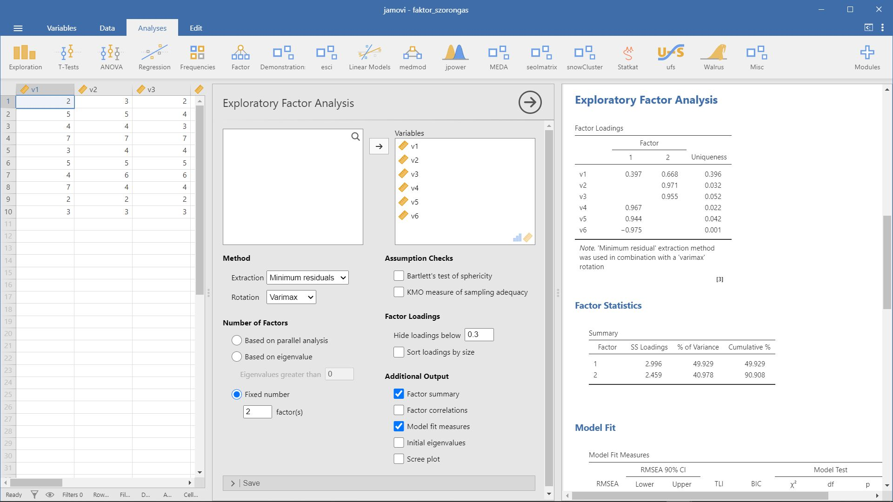
4.7 Példa: Valóban szétválasztható a reál és a humán tárgyakhoz szükséges tudás?
- A példa forrása: Münnich és mtsai. (2006) 3.7.1 Probléma
- Kapcsolódó jamovi állomány:
faktor_real_human_targyak.omv
Ebben a példában azzal foglalkozunk, hogy a diákok teljesítménye alapján a tantárgyak “szétválnak-e” reál és humán tárgyakra, avagy illeszthetünk-e egy kétfaktoros modellt az adatokra.
Az adatok a faktor_real_human_targyak.xlsx állományban találhatók.
d <- rio::import(file = "adat/faktor_real_human_targyak.xlsx")
str(d)
#> 'data.frame': 30 obs. of 6 variables:
#> $ matek : num 5 4 3 2 5 1 5 2 5 5 ...
#> $ informatika: num 4 4 4 2 5 1 5 2 5 4 ...
#> $ kemia : num 5 5 3 3 5 1 5 3 5 5 ...
#> $ irodalom : num 5 4 2 5 3 5 3 5 4 2 ...
#> $ nyelvtan : num 4 4 2 5 3 5 3 5 5 2 ...
#> $ angol : num 5 5 3 5 3 5 3 5 5 2 ...
psych::headTail(d)
#> matek informatika kemia irodalom nyelvtan angol
#> 1 5 4 5 5 4 5
#> 2 4 4 5 4 4 5
#> 3 3 4 3 2 2 3
#> 4 2 2 3 5 5 5
#> ... ... ... ... ... ... ...
#> 27 5 5 5 2 2 3
#> 28 5 5 5 4 4 4
#> 29 2 2 3 4 5 5
#> 30 5 5 5 4 5 5Összesen hat változónk van. Az első hármat “hétköznapi” tudásunk alapján a reál tárgyak csoportjába, míg a második hármat a humán tárgyak csoportjába sorolnánk.
print(cor(d), digits = 2)
#> matek informatika kemia irodalom nyelvtan angol
#> matek 1.00 0.94 0.91 -0.15 -0.21 -0.21
#> informatika 0.94 1.00 0.82 -0.20 -0.23 -0.23
#> kemia 0.91 0.82 1.00 -0.19 -0.23 -0.21
#> irodalom -0.15 -0.20 -0.19 1.00 0.93 0.89
#> nyelvtan -0.21 -0.23 -0.23 0.93 1.00 0.95
#> angol -0.21 -0.23 -0.21 0.89 0.95 1.00A korrelációs mátrix értékei azt sugallják, hogy két faktort azonosíthatunk. Az első faktort az első három változó (vagyis a reál tárgyak) alkotják, míg a második faktort a második három változó, azaz a humán tárgyak adják. A következő lépésben faktoranalízis segítségével teszteljük, hogy helyes-e a megérzésünk.
fa_1 <- factanal(d, factors = 2, rotation = "varimax", scores = "Bartlett")
fa_1
#>
#> Call:
#> factanal(x = d, factors = 2, scores = "Bartlett", rotation = ...
#>
#> Uniquenesses:
#> matek informatika kemia irodalom nyelvtan
#> 0.005 0.114 0.173 0.122 0.006
#> angol
#> 0.094
#>
#> Loadings:
#> Factor1 Factor2
#> matek -0.107 0.992
#> informatika -0.136 0.931
#> kemia -0.139 0.898
#> irodalom 0.936
#> nyelvtan 0.991 -0.106
#> angol 0.946 -0.105
#>
#> Factor1 Factor2
#> SS loadings 2.802 2.683
#> Proportion Var 0.467 0.447
#> Cumulative Var 0.467 0.914
#>
#> Test of the hypothesis that 2 factors are sufficient.
#> The chi square statistic is 5.24 on 4 degrees of freedom.
#> The p-value is 0.264Láthatjuk, hogy a khi-négyzet statisztika alapján a kétfaktoros modell illeszkedik az adatokra, hiszen a statisztikához tartozó szignifikancia-szint p=0,264.
A “Proportion Var” sor mutatja, hogy egyes faktorok az összvariancia hány százalékát magyarázzák. Láthatjuk, hogy az első faktor 47%-át magyarázza az összvarianciának, míg a második 45%-át - kerekített értékben. A két faktor összesen kb. 91%-át magyarázza az összvarianciának.
A “Loadings” résznél láthatjuk a faktorsúlyokat. A faktorsúlyok értékei megerősítik azt, amit a korrelációs mátrix és az előzetes tudásunk alapján véltünk: a matek, informatika és a kémia tárgyak alkotják az egyik faktort (a másodikat), a faktorsúlyok a második faktornál 0,9-es érték körül mozognak. Az irodalom, nyelvtan és angol tárgyak alkotják a másik faktort (az elsőt), az ide tartozó faktorsúlyok is 0,9 felett vannak.
kommunalitas <- 1 - fa_1$uniquenesses
print(kommunalitas, digits = 3)
#> matek informatika kemia irodalom nyelvtan
#> 0.995 0.886 0.827 0.878 0.994
#> angol
#> 0.906A kommunalitások alapján látható, hogy az eredeti változók a szórásuk nagy részét megőrizték a faktorba kerüléskor. A magas, 0,9 körüli értékek arra utalnak, hogy a kétfaktoros modellnél az információveszteség elenyészően kicsi.
print(fa_1$scores, digits = 3)
#> Factor1 Factor2
#> 1 0.400 0.950
#> 2 0.299 0.314
#> 3 -1.481 -0.542
#> 4 0.965 -0.952
#> 5 -0.534 0.875
#> 6 0.893 -1.648
#> 7 -0.534 0.875
#> 8 0.965 -0.952
#> 9 1.143 1.057
#> 10 -1.391 0.752
#> 11 1.107 0.403
#> 12 0.181 -0.359
#> 13 -1.601 -1.234
#> 14 1.175 1.034
#> 15 -0.818 -1.836
#> 16 1.175 1.026
#> 17 0.109 -1.046
#> 18 -1.389 0.781
#> 19 0.353 0.945
#> 20 -0.604 0.215
#> 21 0.181 -0.359
#> 22 0.965 -0.952
#> 23 -1.389 0.781
#> 24 0.894 -1.620
#> 25 -0.534 0.875
#> 26 -1.586 -1.235
#> 27 -1.341 0.786
#> 28 0.321 0.969
#> 29 0.931 -0.958
#> 30 1.143 1.057Végül, nézzük meg az egyes személyek faktorértékeit. A faktorértékeknél azt láthatjuk, hogy akik reál tárgyakból értek el jobb eredményt, azok a második faktorban kaptak magasabb pontszámot, míg akik a humán tárgyakból kaptak jobb jegyeket, azok az első faktorban kaptak magasabb pontszámokat.
Összefoglalva, az adatokra jól illeszkedik a kétfaktoros modell, vagyis azonosíthatjuk a humán és a reál tárgyakat az egyes tantárgyakból nyújtott eredmények alapján. Az egyes tárgyak faktorba történő besorolása összhangban van “hétköznapi”, előzetes tudásunkkal: a matek, informatika és a kémia sorolható a reál, míg az irodalom, nyelvtan és angol tárgyak a humán tárgyakhoz.
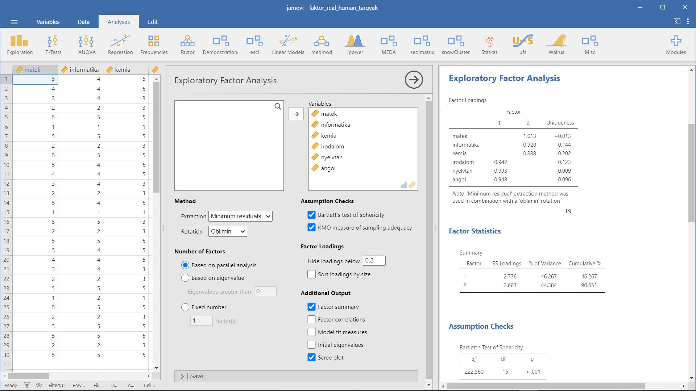
4.8 Példa: Toleranciavizsgálat egy másik aspektusból
- A példa forrása: Münnich és mtsai. (2006) 3.7.2 Probléma
- Kapcsolódó jamovi állomány:
faktor_munkahelyi_tolarencia.omv
A főkomponenselemzés kapcsán már volt szó a toleranciáról. Megvizsgáltuk, hogy milyen jelenségek, milyen változók tartoznak a tolerancia körébe. Most azt próbáljuk megállapítani, hogyan épül fel a tolerancia, milyen a szerkezete, vannak-e látens dimenziói, ha igen, akkor melyek ezek.
Az adatok a faktor_munkahelyi_tolarencia.xlsx állományban találhatók.
d <- rio::import("adat/faktor_munkahelyi_tolarencia.xlsx")
str(d)
#> 'data.frame': 155 obs. of 18 variables:
#> $ alkohol : num 1 1 1 1 1 2 1 1 1 1 ...
#> $ kabitoszer : num 1 1 1 1 1 1 1 1 1 1 ...
#> $ hianyzik : num 3 1 1 2 1 1 5 1 1 3 ...
#> $ dohanyzas : num 4 5 1 3 1 4 5 1 5 5 ...
#> $ udvariatlan: num 3 1 5 2 2 1 1 1 1 1 ...
#> $ rendetlen : num 3 1 5 2 2 1 1 1 1 3 ...
#> $ pontatlan : num 3 1 5 3 2 1 1 1 1 3 ...
#> $ pletykas : num 1 1 5 2 1 2 1 1 1 3 ...
#> $ harsany : num 4 3 5 2 2 4 1 1 2 3 ...
#> $ tudalekos : num 3 2 4 3 2 2 1 1 2 1 ...
#> $ csamcsog : num 3 1 5 3 3 1 1 1 1 3 ...
#> $ lusta : num 3 1 5 2 3 4 1 1 1 5 ...
#> $ szemtelen : num 3 1 5 2 2 1 1 1 1 1 ...
#> $ bufog : num 3 1 5 2 2 5 5 1 1 1 ...
#> $ felelotlen : num 3 1 5 2 2 1 1 1 1 1 ...
#> $ bosszuallo : num 2 2 3 2 1 1 1 1 1 1 ...
#> $ durva : num 2 1 5 2 2 1 1 1 1 1 ...
#> $ agressziv : num 2 1 5 1 2 1 1 1 1 1 ...
psych::headTail(d)
#> alkohol kabitoszer hianyzik dohanyzas udvariatlan rendetlen
#> 1 1 1 3 4 3 3
#> 2 1 1 1 5 1 1
#> 3 1 1 1 1 5 5
#> 4 1 1 2 3 2 2
#> ... ... ... ... ... ... ...
#> 152 3 1 2 5 3 4
#> 153 3 1 2 2 2 1
#> 154 4 4 2 5 3 4
#> 155 3 3 4 5 3 4
#> pontatlan pletykas harsany tudalekos csamcsog lusta szemt...
#> 1 3 1 4 3 3 3 ...
#> 2 1 1 3 2 1 1 ...
#> 3 5 5 5 4 5 5 ...
#> 4 3 2 2 3 3 2 ...
#> ... ... ... ... ... ... ... ...
#> 152 2 2 5 3 4 5 ...
#> 153 1 1 1 2 1 1 ...
#> 154 5 5 3 2 2 3 ...
#> 155 4 2 2 1 1 3 ...
#> bufog felelotlen bosszuallo durva agressziv
#> 1 3 3 2 2 2
#> 2 1 1 2 1 1
#> 3 5 5 3 5 5
#> 4 2 2 2 2 1
#> ... ... ... ... ... ...
#> 152 4 2 1 3 1
#> 153 1 1 1 1 1
#> 154 4 5 5 5 5
#> 155 1 2 1 2 2print(cor(d), digits = 2)
#> alkohol kabitoszer hianyzik dohanyzas udvariatlan
#> alkohol 1.000 0.7293 0.50 0.285 0.40
#> kabitoszer 0.729 1.0000 0.49 0.110 0.45
#> hianyzik 0.498 0.4901 1.00 0.246 0.53
#> dohanyzas 0.285 0.1095 0.25 1.000 0.15
#> udvariatlan 0.404 0.4497 0.53 0.145 1.00
#> rendetlen 0.372 0.4119 0.60 0.202 0.70
#> pontatlan 0.340 0.4265 0.52 0.095 0.58
#> pletykas 0.138 0.2321 0.19 0.071 0.38
#> harsany 0.064 -0.0092 0.10 0.178 0.32
#> tudalekos 0.129 0.1349 0.21 0.021 0.42
#> csamcsog 0.324 0.3034 0.31 0.108 0.46
#> lusta 0.274 0.2901 0.34 0.156 0.47
#> szemtelen 0.304 0.4449 0.45 0.060 0.70
#> bufog 0.283 0.3011 0.34 0.160 0.45
#> felelotlen 0.304 0.4867 0.38 -0.068 0.53
#> bosszuallo 0.372 0.5641 0.33 -0.010 0.46
#> durva 0.389 0.4186 0.38 0.146 0.50
#> agressziv 0.344 0.4207 0.36 0.024 0.48
#> rendetlen pontatlan pletykas harsany tudalekos
#> alkohol 0.37 0.340 0.138 0.0636 0.129
#> kabitoszer 0.41 0.427 0.232 -0.0092 0.135
#> hianyzik 0.60 0.519 0.193 0.0995 0.206
#> dohanyzas 0.20 0.095 0.071 0.1781 0.021
#> udvariatlan 0.70 0.577 0.375 0.3230 0.416
#> rendetlen 1.00 0.795 0.421 0.3791 0.378
#> pontatlan 0.80 1.000 0.420 0.2896 0.361
#> pletykas 0.42 0.420 1.000 0.5020 0.397
#> harsany 0.38 0.290 0.502 1.0000 0.501
#> tudalekos 0.38 0.361 0.397 0.5012 1.000
#> csamcsog 0.49 0.447 0.300 0.4316 0.514
#> lusta 0.55 0.469 0.335 0.4796 0.429
#> szemtelen 0.62 0.532 0.264 0.2995 0.434
#> bufog 0.39 0.336 0.212 0.2902 0.272
#> felelotlen 0.54 0.582 0.280 0.1495 0.319
#> bosszuallo 0.41 0.416 0.290 0.0583 0.333
#> durva 0.48 0.419 0.190 0.1358 0.229
#> agressziv 0.46 0.467 0.234 0.1348 0.309
#> csamcsog lusta szemtelen bufog felelotlen bosszuallo
#> alkohol 0.32 0.27 0.30 0.28 0.304 0.372
#> kabitoszer 0.30 0.29 0.44 0.30 0.487 0.564
#> hianyzik 0.31 0.34 0.45 0.34 0.380 0.331
#> dohanyzas 0.11 0.16 0.06 0.16 -0.068 -0.010
#> udvariatlan 0.46 0.47 0.70 0.45 0.532 0.458
#> rendetlen 0.49 0.55 0.62 0.39 0.542 0.410
#> pontatlan 0.45 0.47 0.53 0.34 0.582 0.416
#> pletykas 0.30 0.34 0.26 0.21 0.280 0.290
#> harsany 0.43 0.48 0.30 0.29 0.149 0.058
#> tudalekos 0.51 0.43 0.43 0.27 0.319 0.333
#> csamcsog 1.00 0.54 0.55 0.67 0.400 0.461
#> lusta 0.54 1.00 0.66 0.41 0.579 0.472
#> szemtelen 0.55 0.66 1.00 0.52 0.695 0.601
#> bufog 0.67 0.41 0.52 1.00 0.389 0.432
#> felelotlen 0.40 0.58 0.69 0.39 1.000 0.712
#> bosszuallo 0.46 0.47 0.60 0.43 0.712 1.000
#> durva 0.44 0.54 0.66 0.44 0.571 0.556
#> agressziv 0.45 0.53 0.60 0.39 0.643 0.731
#> durva agressziv
#> alkohol 0.39 0.344
#> kabitoszer 0.42 0.421
#> hianyzik 0.38 0.360
#> dohanyzas 0.15 0.024
#> udvariatlan 0.50 0.476
#> rendetlen 0.48 0.465
#> pontatlan 0.42 0.467
#> pletykas 0.19 0.234
#> harsany 0.14 0.135
#> tudalekos 0.23 0.309
#> csamcsog 0.44 0.453
#> lusta 0.54 0.529
#> szemtelen 0.66 0.605
#> bufog 0.44 0.392
#> felelotlen 0.57 0.643
#> bosszuallo 0.56 0.731
#> durva 1.00 0.786
#> agressziv 0.79 1.000Vannak változók, melyek között szinte nincs is kapcsolat, olyan gyenge a korreláció (ilyen például az “alkohol” és a “harsány” változó közötti korreláció, melynek értéke 0,06), és vannak olyan változók is, melyek között szorosabb kapcsolat figyelhető meg (ilyen például az “alkohol” és a “kábítószer” változó, melyek közötti korreláció mértéke 0,73).
Végezzünk faktorelemzést.
fa_1 <- factanal(d, factors = 6, rotation = "varimax", scores = "Bartlett")
fa_1
#>
#> Call:
#> factanal(x = d, factors = 6, scores = "Bartlett", rotation = ...
#>
#> Uniquenesses:
#> alkohol kabitoszer hianyzik dohanyzas udvariatlan
#> 0.161 0.262 0.485 0.805 0.400
#> rendetlen pontatlan pletykas harsany tudalekos
#> 0.101 0.296 0.641 0.005 0.584
#> csamcsog lusta szemtelen bufog felelotlen
#> 0.005 0.436 0.320 0.513 0.274
#> bosszuallo durva agressziv
#> 0.190 0.005 0.247
#>
#> Loadings:
#> Factor1 Factor2 Factor3 Factor4 Factor5 Factor6
#> alkohol 0.157 0.182 0.827 0.146 0.275
#> kabitoszer 0.275 0.271 0.761
#> hianyzik 0.174 0.552 0.383 0.104 0.146
#> dohanyzas 0.108 0.178 0.377
#> udvariatlan 0.333 0.569 0.263 0.244 0.184
#> rendetlen 0.244 0.833 0.275 0.139 0.190 0.121
#> pontatlan 0.233 0.733 0.228 0.171 0.178
#> pletykas 0.114 0.272 0.506
#> harsany 0.945 0.180 0.241
#> tudalekos 0.150 0.200 0.473 0.346
#> csamcsog 0.220 0.209 0.266 0.127 0.903
#> lusta 0.441 0.304 0.432 0.105 0.283
#> szemtelen 0.566 0.433 0.255 0.156 0.273
#> bufog 0.293 0.174 0.187 0.158 0.557
#> felelotlen 0.564 0.412 0.198 0.250 0.129 -0.346
#> bosszuallo 0.576 0.211 0.133 0.402 0.240 -0.443
#> durva 0.914 0.203 0.135 0.183 0.256
#> agressziv 0.769 0.224 0.117 0.209 0.202 -0.118
#>
#> Factor1 Factor2 Factor3 Factor4 Factor5 Factor6
#> SS loadings 3.116 2.756 2.009 1.927 1.731 0.731
#> Proportion Var 0.173 0.153 0.112 0.107 0.096 0.041
#> Cumulative Var 0.173 0.326 0.438 0.545 0.641 0.682
#>
#> Test of the hypothesis that 6 factors are sufficient.
#> The chi square statistic is 112.68 on 60 degrees of freedom.
#> The p-value is 4.55e-05A fenti hatfaktoros megoldás eredményen látható, hogy a khi-négyzet statisztika szignifikancia-szintje szerint nem jól illeszkedik az adatokra. A “Cumulative Var” sorban azt is láthatjuk, hogy a hat faktor összesen az összvariancia 68%-át magyarázza. A faktorsúlyok alapján (3.17. R-eredmény) az egyes faktorok a következőképpen alakulnak. Az első faktorban olyan változók szerepelnek, mint a „lusta”, „szemtelen”, „felelőtlen”, „bosszúálló”, „durva”, „agresszív”. A második faktorban szerepel a „hiányzik”, „udvariatlan”, „rendetlen” és „pontatlan”. A harmadikban szerepel a „pletykás”, „harsány” és „tudálékos”. A negyedik faktorban következik az „alkohol” és a „kábítószer”, ötödikben a „csámcsog” és a „büfög”, míg az utolsóban a „dohányzás”.
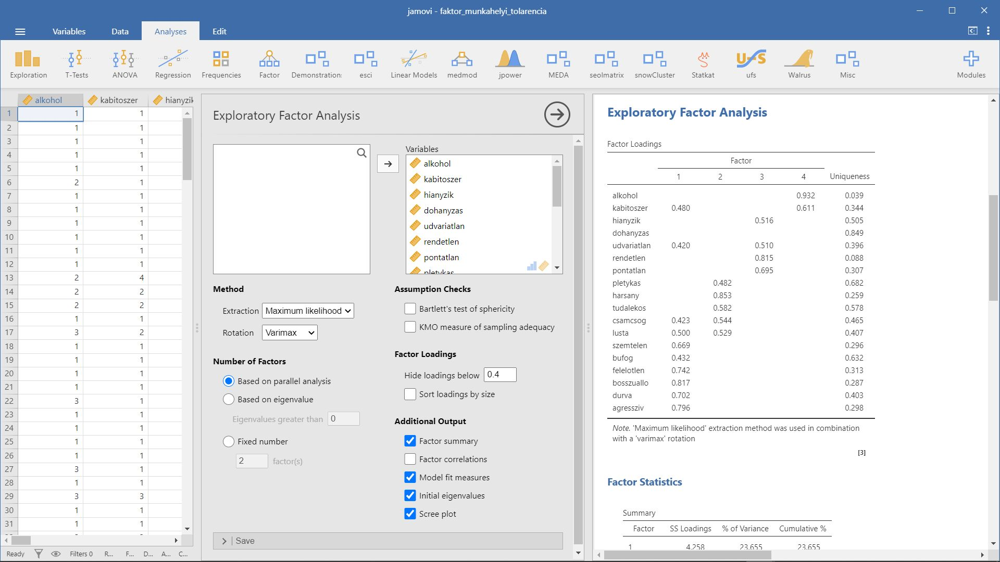
4.9 Példa: A Big Five személyiségvizsgáló eljárás faktoranalízise
- A példa forrása: Münnich és mtsai. (2006) 3.7.3 Probléma
- Kapcsolódó jamovi állomány:
faktor_bigfive.omv
Szinte minden pszichológus számára ismert a Big Five személyiségvizsgáló eljárás. A Big Five - ahogyan a neve is mutatja - egy olyan személyiségmodell, és arra épülő személyiségvizsgáló eljárás, amely azt feltételezi, hogy a személyiséget öt, egymástól független dimenzió, öt faktor alkotja. Az egyes dimenzióknak, faktoroknak több elnevezése is ismert, ebben a vizsgálatban a következő elnevezéseket fogjuk használni:
- Extroverzió - introverzió
- Együttműködés
- Lelkiismeretesség
- Stabilitás - neurocitás
- Élményekre való nyitottság
Az adatok a faktor_bigfive.xlsx állományban találhatók.
d <- rio::import(file = "adat/faktor_bigfive.xlsx")
str(d)
#> 'data.frame': 20 obs. of 10 variables:
#> $ V1 : num 2 3 4 5 7 5 1 4 5 6 ...
#> $ V2 : num 7 5 4 3 1 3 7 4 3 1 ...
#> $ V3 : num 2 4 5 7 6 3 5 6 1 4 ...
#> $ V4 : num 6 5 3 1 2 5 3 2 7 4 ...
#> $ V5 : num 4 7 5 7 1 2 5 4 5 3 ...
#> $ V6 : num 4 2 3 1 7 6 3 4 3 5 ...
#> $ V7 : num 1 2 5 7 5 4 3 5 4 2 ...
#> $ V8 : num 6 6 3 1 3 4 5 3 5 6 ...
#> $ V9 : num 2 5 7 4 5 3 5 4 6 6 ...
#> $ V10: num 7 3 2 4 3 5 3 4 2 2 ...
psych::headTail(d)
#> V1 V2 V3 V4 V5 V6 V7 V8 V9 V10
#> 1 2 7 2 6 4 4 1 6 2 7
#> 2 3 5 4 5 7 2 2 6 5 3
#> 3 4 4 5 3 5 3 5 3 7 2
#> 4 5 3 7 1 7 1 7 1 4 4
#> ... ... ... ... ... ... ... ... ... ... ...
#> 17 5 3 2 6 1 7 5 3 5 3
#> 18 7 1 5 3 2 6 5 3 6 2
#> 19 4 3 2 5 7 2 2 6 3 5
#> 20 7 1 4 4 5 3 7 1 5 3A fenti adatok egy Big Five eljárásra épülő hipotetikus vizsgálat adatait tartalmazza. Az egyes változókhoz tartozó itemeket egy 1-7 skálán jelölték meg a vizsgálati személyek attól függően, hogy mennyire illik vagy nem illik rájuk az adott állítás. A 7 jelenteti azt, hogy teljes mértékben illik, és az 1, hogy egyáltalán nem. Az egyes változókhoz tartozó itemek a következők:
- v1 (extroverzió): Általában beszédes, aktív és társaságkedvelő vagyok.
- v2 (introverzió): Jobban szeretek csendesen visszahúzódni egy sarokba, semmint a középpontban lenni.
- v3 (együttműködés): Szívesen segítek másoknak, vagy dolgozok másokkal együtt valamilyen közös feladaton.
- v4 (együttműködés): Gyakran viselkedem ellenségesen és kötözködően másokkal.
- v5 (lelkiismeretesség): Általában tudom, hogy mit akarok, és céltudatosan igyekszem elérni azt.
- v6 (lelkiismeretesség):Sokak szerint megbízhatatlan vagyok.
- v7 (stabilitás): Érzelmileg kiegyensúlyozottnak, higgadtnak tartom magam.
- v8 (neurocitás): Gyakran vagyok érzelmileg csapongó.
- v9 (élményekre való nyitottság): Kíváncsi vagyok.
- v10 (élményekre való nyitottság): Ragaszkodom a szokásaimhoz.
print(cor(d), digits = 3)
#> V1 V2 V3 V4 V5 V6 V7
#> V1 1.00000 -0.98085 0.00408 -0.0645 -0.2771 0.2393 0.3714
#> V2 -0.98085 1.00000 0.00000 0.0726 0.2307 -0.2069 -0.3294
#> V3 0.00408 0.00000 1.00000 -0.9751 0.0661 -0.0680 0.2631
#> V4 -0.06446 0.07256 -0.97510 1.0000 -0.0895 0.0905 -0.2257
#> V5 -0.27711 0.23072 0.06615 -0.0895 1.0000 -0.9814 -0.1954
#> V6 0.23926 -0.20689 -0.06797 0.0905 -0.9814 1.0000 0.0881
#> V7 0.37135 -0.32942 0.26315 -0.2257 -0.1954 0.0881 1.0000
#> V8 -0.33508 0.28028 -0.28799 0.2500 0.2179 -0.1087 -0.9848
#> V9 -0.11472 0.06565 0.08152 -0.0377 -0.1790 0.1864 0.1554
#> V10 0.05897 0.00323 -0.10682 0.0630 0.1865 -0.2005 -0.1900
#> V8 V9 V10
#> V1 -0.3351 -0.1147 0.05897
#> V2 0.2803 0.0656 0.00323
#> V3 -0.2880 0.0815 -0.10682
#> V4 0.2500 -0.0377 0.06298
#> V5 0.2179 -0.1790 0.18647
#> V6 -0.1087 0.1864 -0.20051
#> V7 -0.9848 0.1554 -0.19002
#> V8 1.0000 -0.0891 0.10854
#> V9 -0.0891 1.0000 -0.98281
#> V10 0.1085 -0.9828 1.00000Láthatjuk, hogy a Big Five modellje szerint összekapcsolódó itemek nagyon szoros, ám negatív korrelációban vannak egymással (tehát a v1 a v2-vel, v3 a v4-gyel stb.) a korreláció értékek -0,98 körül mozognak. A negatív előjelű kapcsolat utal arra, hogy az összekapcsolódó itemek egy dimenzió két végpontját ragadják meg. Hogy mennyire helytálló a korrelációs mátrix által felállított elképzelésünk, arra a faktoranalízis adhat választ.
fa_1 <- factanal(d, factors = 5, rotation = "varimax", scores = "Bartlett")
fa_1
#>
#> Call:
#> factanal(x = d, factors = 5, scores = "Bartlett", rotation = ...
#>
#> Uniquenesses:
#> V1 V2 V3 V4 V5 V6 V7 V8 V9 V10
#> 0.022 0.005 0.005 0.034 0.005 0.019 0.012 0.005 0.025 0.005
#>
#> Loadings:
#> Factor1 Factor2 Factor3 Factor4 Factor5
#> V1 -0.194 -0.955 0.146
#> V2 0.136 0.983
#> V3 -0.151 -0.984
#> V4 0.104 0.974
#> V5 0.124 0.123 -0.977
#> V6 0.109 -0.113 0.977
#> V7 0.114 -0.959 -0.197 -0.122
#> V8 0.972 0.140 0.149
#> V9 0.978
#> V10 -0.989
#>
#> Factor1 Factor2 Factor3 Factor4 Factor5
#> SS loadings 1.978 1.977 1.975 1.972 1.961
#> Proportion Var 0.198 0.198 0.197 0.197 0.196
#> Cumulative Var 0.198 0.395 0.593 0.790 0.986
#>
#> Test of the hypothesis that 5 factors are sufficient.
#> The chi square statistic is 9.02 on 5 degrees of freedom.
#> The p-value is 0.108A Big Five jellegéből adódik, hogy egy ötfaktoros modellt teszteltünk, amely a khi-négyzet statisztika szerint illeszkedik is az adatokra. A “Cumulative Var” sorban azt is láthatjuk, hogy a modell magyarázóértéke igen jó, hiszen az öt faktor az összvarianciának majdnem a 99%-át magyarázza. A “Loadings”-szal jelölt faktorsúlyoknál megnézhetjük, hogyan alakulnak az egyes faktorok. A faktorok szerkezete teljes mértékben összecseng előzetes várakozásunkkal: minden egyes faktorba két változó tartozik, az összetartozó változók pedig úgy kapcsolódnak össze, ahogyan azt az elmélet alapján is vártuk (vagyis a v1 a v2-vel, v3 a v4-gyel stb.). A faktorsúlyok alapján az öt faktor a következőképpen alakul:
- faktor: élményekre való nyitottság (v9, v10)
- faktor: stabilitás-neurocitás (v7, v8)
- faktor: extroverzió-introverzió (v1, v2)
- faktor: lelkiismeretesség (v5, v6)
- faktor: együttműködés (v3, v4)
print(fa_1$scores, digits = 3)
#> Factor1 Factor2 Factor3 Factor4 Factor5
#> 1 -1.971 0.8369 1.7713 0.5375 1.0879
#> 2 0.559 1.0027 0.5314 -1.4064 0.1571
#> 3 1.066 -0.5120 0.3125 -0.5840 -0.2786
#> 4 -0.250 -1.5838 -0.1453 -1.7374 -1.3075
#> 5 0.155 -0.0311 -1.0713 1.7501 -1.0874
#> 6 -0.956 0.0323 -0.0697 1.3117 0.6154
#> 7 0.355 0.3940 1.8085 -0.2350 -0.4319
#> 8 -0.350 -0.4407 0.4149 0.1847 -0.9641
#> 9 1.148 0.2481 -0.3858 -0.7208 1.9149
#> 10 1.035 1.5221 -1.3600 0.5723 -0.0805
#> 11 0.403 1.9639 0.5569 -0.0237 -1.8494
#> 12 -0.236 -0.7084 -0.1276 -0.0423 1.3856
#> 13 -1.397 0.7453 -0.8566 -0.3500 -0.6176
#> 14 -2.060 -0.3921 -1.2143 -0.4555 -0.4865
#> 15 0.109 -1.7587 1.7177 0.7326 -0.6666
#> 16 1.560 -0.0238 0.8113 0.0349 0.2353
#> 17 0.210 -0.5591 0.0271 1.6983 1.3235
#> 18 0.852 -0.1328 -1.1529 1.0491 -0.4370
#> 19 -0.593 0.9647 -0.4275 -1.4764 1.0903
#> 20 0.362 -1.5674 -1.1406 -0.8398 0.3971Előhívhatjuk a személyek egyes faktorbeli értékeit is.
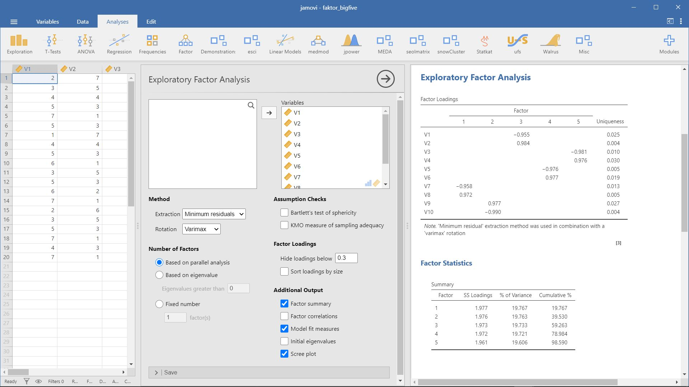
4.10 Példa: Milyen dimenziói vannak a kockázatvállalásnak és változik-e a korral a kockázatvállalás?
- A példa forrása: Münnich és mtsai. (2006) 3.7.4 Probléma
- Kapcsolódó jamovi állomány:
faktor_kockazat.omv
A példák is mutatják, hogy a kockázatvállalásokat csoportosíthatjuk a kockázatot jelentő tényezők alapján, ahol az egyik csoportban az emberek saját testi épségüket teszik kockára (mint az autóversenyzés esetében), de kockáztathatnak pénzt vagy valamilyen becsületbeli dolgot is (mint a kártyázás és a blöffölés esetében). Példánkban megnézzük, hogy a faktoranalízis alátámasztja-e feltevésünket, majd a faktoranalízis eredményeit felhasználva megnézzük, hogy a kockázatvállaló viselkedésre hatással van-e a kor.
Az adatbázisban szereplő adatokat úgy kaptuk, hogy a vizsgálati személyeknek különböző foglalkozású, illetve különböző tevékenységet végző embereket kellett megítélniük, hogy mennyire tartják őket szimpatikusnak egy 1-7 skálán, ahol a 7 jelentette azt, hogy nagyon szimpatikus. Ily módon megkaptuk a személyek kockázat iránti attitűdjét. A változók között olyan személyek szerepelnek, mint kártyajátékosok, autóversenyzők, üzletemberek (akik sok pénzt kockáztatnak), veszélyes sportot űző emberek, nagy pénzekben fogadó emberek, blöffölők és hivatásos katonák.
Ezen kívül két adat szerepel az adatbázisban: a nem és a kor.
Az adatok a faktor_kockazat.xlsx állományban találhatók.
d <- rio::import(file = "adat/faktor_kockazat.xlsx")
str(d)
#> 'data.frame': 156 obs. of 9 variables:
#> $ kartya : num 5 4 2 1 4 5 4 4 3 5 ...
#> $ autoversenyzo : num 3 3 5 1 3 4 2 2 3 5 ...
#> $ uzletember : num 3 3 2 1 4 3 2 3 2 3 ...
#> $ veszelyessport: num 3 2 4 1 3 1 2 1 2 3 ...
#> $ fogadas : num 3 3 4 2 3 4 4 4 3 3 ...
#> $ bloff : num 3 1 1 1 3 3 3 5 4 2 ...
#> $ katona : num 1 1 2 1 2 2 2 1 2 2 ...
#> $ kor : num 25 19 18 18 24 28 25 39 19 19 ...
#> $ nem : num 1 0 1 0 1 1 0 1 0 1 ...
psych::headTail(d)
#> kartya autoversenyzo uzletember veszelyessport fogadas bloff
#> 1 5 3 3 3 3 3
#> 2 4 3 3 2 3 1
#> 3 2 5 2 4 4 1
#> 4 1 1 1 1 2 1
#> ... ... ... ... ... ... ...
#> 153 4 2 3 4 4 4
#> 154 5 3 4 5 5 3
#> 155 4 1 1 3 5 3
#> 156 4 3 3 2 4 3
#> katona kor nem
#> 1 1 25 1
#> 2 1 19 0
#> 3 2 18 1
#> 4 1 18 0
#> ... ... ... ...
#> 153 2 26 1
#> 154 3 24 1
#> 155 2 25 0
#> 156 4 21 1print(cor(d[1:7]), digits = 2)
#> kartya autoversenyzo uzletember veszelyessport
#> kartya 1.00 0.1702 0.316 0.080
#> autoversenyzo 0.17 1.0000 0.113 0.222
#> uzletember 0.32 0.1132 1.000 0.177
#> veszelyessport 0.08 0.2224 0.177 1.000
#> fogadas 0.56 -0.0062 0.148 0.055
#> bloff 0.27 0.0023 0.253 0.142
#> katona -0.23 0.1833 -0.092 0.160
#> fogadas bloff katona
#> kartya 0.5579 0.2671 -0.233
#> autoversenyzo -0.0062 0.0023 0.183
#> uzletember 0.1482 0.2535 -0.092
#> veszelyessport 0.0553 0.1424 0.160
#> fogadas 1.0000 0.1986 -0.096
#> bloff 0.1986 1.0000 -0.120
#> katona -0.0961 -0.1197 1.000A korrelációs mátrixon nem látunk kiemelkedően magas értékeket, kissé nehéz egyértelmű következtetéseket levonni a faktorokra vonatkozóan, ezért teszteljünk egy kétfaktoros faktoranalízist az adatokra.
fa_1 <- factanal(d[1:7], factors = 2, rotation = "varimax", scores = "Bartlett")
fa_1
#>
#> Call:
#> factanal(x = d[1:7], factors = 2, scores = "Bartlett", rotati...
#>
#> Uniquenesses:
#> kartya autoversenyzo uzletember veszelyessport
#> 0.073 0.724 0.863 0.775
#> fogadas bloff katona
#> 0.663 0.916 0.796
#>
#> Loadings:
#> Factor1 Factor2
#> kartya 0.963
#> autoversenyzo 0.164 0.499
#> uzletember 0.330 0.169
#> veszelyessport 0.467
#> fogadas 0.577
#> bloff 0.285
#> katona -0.244 0.380
#>
#> Factor1 Factor2
#> SS loadings 1.544 0.646
#> Proportion Var 0.221 0.092
#> Cumulative Var 0.221 0.313
#>
#> Test of the hypothesis that 2 factors are sufficient.
#> The chi square statistic is 14.81 on 8 degrees of freedom.
#> The p-value is 0.063Láthatjuk, hogy a khi-négyzet statisztika szerint a modell illeszkedik az adatokra, ellenben a modell magyarázóértéke egy picit csekély: a két faktor az összvariancia 31%-át magyarázza (“Cumulative Var”).
A faktorsúlyok alapján (“Loadings”) pedig az egyes faktorok a következőképpen alakulnak: első faktorba tartoznak a kártyajátékosok, üzletemberek, akik fogadnak, illetve a blöffölők, míg a második faktorba az autóversenyzők, veszélyes sportot űzők és a hivatásos katonák tartoznak. Az egyes faktorok szerkezete teljes mértékben összhangban van az előzetes elvárásunkkal.
print(fa_1$scores, digits = 3)
#> Factor1 Factor2
#> 1 1.338 0.2060
#> 2 0.191 -0.4557
#> 3 -2.007 2.7851
#> 4 -3.271 -2.7221
#> 5 0.221 1.0535
#> 6 1.390 0.1120
#> 7 0.244 -0.9563
#> 8 0.337 -1.8187
#> 9 -0.918 0.1116
#> 10 1.298 2.2779
#> 11 0.127 -0.3024
#> 12 -1.103 -1.0278
#> 13 0.116 1.4488
#> 14 -0.942 0.8179
#> 15 0.153 0.0308
#> 16 0.260 -0.2581
#> 17 0.317 -1.0907
#> 18 -0.952 -0.2752
#> 19 -1.006 0.0461
#> 20 0.248 -0.1641
#> 21 1.263 0.9515
#> 22 -0.872 -0.8891
#> 23 0.252 -2.9866
#> 24 1.410 -0.1078
#> 25 -0.940 0.7251
#> 26 -0.956 -0.0078
#> 27 -0.980 1.3390
#> 28 0.186 1.4272
#> 29 1.302 0.3356
#> 30 0.279 0.2009
#> 31 1.291 0.0477
#> 32 -0.958 -0.8053
#> 33 -2.177 0.8512
#> 34 1.502 -1.4686
#> 35 -1.060 -0.7568
#> 36 0.309 -1.9046
#> 37 -0.989 -0.2453
#> 38 0.268 -0.7376
#> 39 -2.066 0.6141
#> 40 0.187 1.5617
#> 41 1.442 -0.3686
#> 42 0.136 -3.1233
#> 43 0.167 -0.7090
#> 44 0.284 -0.0394
#> 45 -0.938 -2.9296
#> 46 0.239 1.8862
#> 47 -0.918 0.1116
#> 48 0.148 -0.8959
#> 49 -0.917 1.5696
#> 50 0.287 -2.2361
#> 51 0.362 1.5434
#> 52 -0.902 0.8298
#> 53 0.177 -0.5210
#> 54 0.233 -3.0390
#> 55 0.215 -1.0421
#> 56 1.338 0.2060
#> 57 -0.917 -0.3597
#> 58 0.290 2.2836
#> 59 0.380 2.2216
#> 60 -1.009 1.2532
#> 61 0.167 -0.7090
#> 62 0.237 0.2937
#> 63 0.321 -0.4330
#> 64 -0.865 -0.5882
#> 65 1.472 1.5473
#> 66 1.382 1.3820
#> 67 0.216 2.3004
#> 68 -0.901 -0.1799
#> 69 0.136 0.4914
#> 70 1.352 -0.1272
#> 71 0.213 -0.3963
#> 72 0.316 -1.2252
#> 73 0.253 -0.5389
#> 74 1.498 -1.3357
#> 75 0.313 -1.1124
#> 76 0.236 -2.5607
#> 77 1.412 -1.5140
#> 78 -0.806 -0.5440
#> 79 0.357 1.3770
#> 80 1.526 -1.8557
#> 81 -0.956 -0.9328
#> 82 0.213 -0.5508
#> 83 -2.165 -2.0523
#> 84 0.361 -2.3705
#> 85 0.313 -1.1124
#> 86 -0.953 0.2860
#> 87 1.506 -1.2822
#> 88 0.221 1.0535
#> 89 0.287 -1.4456
#> 90 0.163 0.5826
#> 91 -0.919 -1.9523
#> 92 -1.011 -1.8702
#> 93 1.365 -0.0867
#> 94 1.366 0.4117
#> 95 0.133 1.7484
#> 96 0.298 2.3371
#> 97 1.484 -2.1467
#> 98 0.226 -1.6345
#> 99 1.443 -0.9944
#> 100 1.447 -0.2023
#> 101 0.124 0.5708
#> 102 0.229 1.3344
#> 103 -1.073 3.4903
#> 104 -0.958 2.2036
#> 105 -0.996 1.0046
#> 106 0.219 -0.3845
#> 107 -0.933 -1.2125
#> 108 -0.944 1.4637
#> 109 -0.822 -1.2422
#> 110 0.215 -0.6436
#> 111 -3.362 1.4583
#> 112 0.216 0.8872
#> 113 0.282 -1.4774
#> 114 1.365 5.5972
#> 115 -0.981 1.8921
#> 116 0.276 -2.7679
#> 117 0.256 -1.5686
#> 118 0.167 1.3748
#> 119 0.188 -1.2679
#> 120 -0.878 0.6500
#> 121 1.549 -1.0112
#> 122 -2.162 1.4349
#> 123 0.202 -0.3223
#> 124 0.181 -0.5340
#> 125 0.138 1.9148
#> 126 1.421 2.1542
#> 127 0.283 -1.4974
#> 128 1.509 1.6139
#> 129 -0.988 2.7435
#> 130 0.432 0.4623
#> 131 0.290 0.1269
#> 132 -3.307 0.8877
#> 133 -0.874 -0.2432
#> 134 -2.065 -1.4897
#> 135 1.471 -0.9086
#> 136 1.485 -0.0976
#> 137 0.277 0.8468
#> 138 0.430 -0.4427
#> 139 1.373 0.5580
#> 140 0.252 1.0119
#> 141 0.267 1.3663
#> 142 -0.928 -0.6924
#> 143 0.334 2.4618
#> 144 -0.732 -1.4387
#> 145 -0.811 -2.4603
#> 146 0.178 -1.3014
#> 147 -1.001 1.8978
#> 148 1.424 0.8826
#> 149 -0.895 2.4341
#> 150 0.260 0.6669
#> 151 -2.101 -0.2909
#> 152 0.250 -1.5703
#> 153 0.282 0.6064
#> 154 1.445 2.5275
#> 155 0.286 -1.4557
#> 156 0.213 1.1345Végül kérjük le az egyes személyek faktorértékeit. Tehát az első faktor jelenti az anyagi/erkölcsi kockázatvállalás iránti attitűdöt, míg a második faktor a testi épséget veszélyeztető kockázatvállalás iránti attitűdöt.
Ezek után nézzük meg, hatással van-e az életkor a kockázatvállalás iránti attitűdre. A további munkát megkönnyítendő, bővítsük ki az adatbázisunkat a két faktor értékeivel.
d <- cbind(d, fa_1$scores)Első lépésben azt nézzük meg, hogy van-e kapcsolat az életkor és az anyagi/erkölcsi téren vállalt kockázat iránti attitűd között. Eddigi ismereteink alapján ez azt jelenti, hogy lineáris regresszió-analízissel megnézzük, hogy van-e kapcsolat a kor és az első faktor faktorértékei között.
summary(lm(Factor1 ~ kor, data = d))
#>
#> Call:
#> lm(formula = Factor1 ~ kor, data = d)
#>
#> Residuals:
#> Min 1Q Median 3Q Max
#> -2.76946 -0.43248 0.06417 0.61206 1.95774
#>
#> Coefficients:
#> Estimate Std. Error t value Pr(>|t|)
#> (Intercept) -2.046470 0.254725 -8.034 2.29e-13 ***
#> kor 0.080761 0.009676 8.347 3.75e-14 ***
#> ---
#> Signif. codes: 0 '***' 0.001 '**' 0.01 '*' 0.05 '.' 0.1 ' ' 1
#>
#> Residual standard error: 0.8628 on 154 degrees of freedom
#> Multiple R-squared: 0.3115, Adjusted R-squared: 0.307
#> F-statistic: 69.67 on 1 and 154 DF, p-value: 3.751e-14A fenti output kimutatja ugyan a kapcsolatot (a t- és az F-statisztika is szignifikáns), ám az R-négyzet („Multiple R-Squared”) értéke kissé gyenge magyarázóerőre utal (a független változó a függő változó varianciájának csupán 30%-át magyarázza). A kapcsolat irányáról azt állapíthatjuk meg, hogy minél idősebb valaki, annál inkább pozitívabb az anyagi/erkölcsi téren vállalt kockázat iránti attitűdje (kor változó együtthatója 0,08).
Ezt követően nézzük meg, hogy van-e kapcsolat az életkor és testi épség terén vállalt kockázat iránti attitűd között. Most is lineáris regresszió-analízissel nézzük meg, hogy van-e kapcsolat a kor és a második faktor faktorértékei között.
summary(lm(Factor2 ~ kor, data = d))
#>
#> Call:
#> lm(formula = Factor2 ~ kor, data = d)
#>
#> Residuals:
#> Min 1Q Median 3Q Max
#> -3.6017 -0.7960 -0.0183 0.7935 4.9395
#>
#> Coefficients:
#> Estimate Std. Error t value Pr(>|t|)
#> (Intercept) 2.27054 0.39416 5.760 4.42e-08 ***
#> kor -0.08960 0.01497 -5.985 1.46e-08 ***
#> ---
#> Signif. codes: 0 '***' 0.001 '**' 0.01 '*' 0.05 '.' 0.1 ' ' 1
#>
#> Residual standard error: 1.335 on 154 degrees of freedom
#> Multiple R-squared: 0.1887, Adjusted R-squared: 0.1834
#> F-statistic: 35.82 on 1 and 154 DF, p-value: 1.465e-08Az eredmény kimutatja ugyan a kapcsolatot ( a t- és az F-statisztika is szignifikáns), ám az R-négyzet („Multiple R-Squared”) értéke kissé gyenge magyarázóerőre utal (a független változó a függő változó varianciájának csupán 20%-át magyarázza. A kapcsolat irányáról azt állapíthatjuk meg, hogy minél idősebb valaki, annál inkább kedvezőtlenebb a testi épség terén vállalt kockázat iránti attitűdje (kor változó együtthatója -0,08).
Összefoglalva, sikerült a faktoranalízissel alátámasztanunk a kockázatvállalás két faktorát. Azt is megállapítottuk, hogy mindkét faktor függ a kortól: az anyagi/erkölcsi téren vállalt kockázat iránti attitűd az évek múlásával egyre kedvezőbbé válik, míg a testi épség terén vállalt kockázat iránti attitűd idővel egyre elutasítóbbá válik.
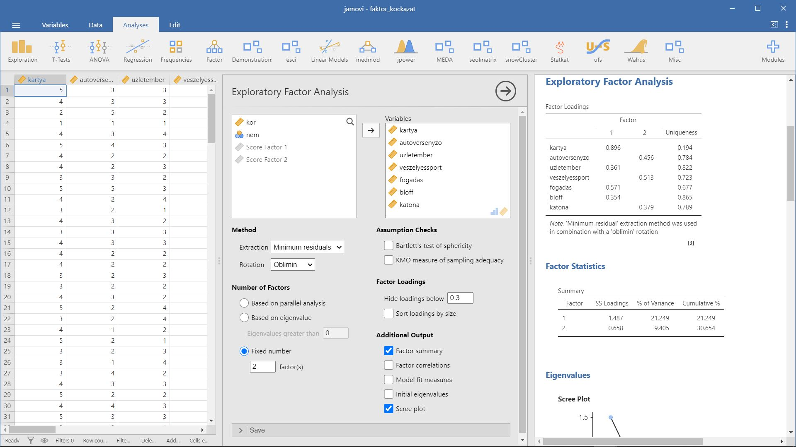
4.11 Példa: Még egyszer Big Five
- A példa forrása: NavarroFoxcroft2022 15.1 Exploratory Factor Analysis
- Kapcsolódó jamovi állomány:
faktor_bfi_sample.omv
A feltáró faktorlemzés (Exploratory Factor Analysis, EFA) feltár minden olyan rejtett, látens tényezőt, amelyre a megfigyelt adatainkból következtethetünk. A pszichológiában a látens tényezők olyan pszichológiai jelenségeket vagy konstruktumokat képviselnek, amelyeket nehéz közvetlenül megfigyelni vagy mérni.
Ebben a példában 25 személyiségpszichológai item elemzését végezzük, amely része a Synthetic Aperture Personality Assessment SAPA webalapú rendszernek.
Az itemek a következők (az R-rel jelölt itemek fordított pontozásúak):
- BARATSA_1 - (R) Közömbös vagyok mások érzései iránt.
- BARATSA_2 - Érdeklődöm mások jólétéről.
- BARATSA_3 - Tudom, hogyan vigasztaljak meg másokat.
- BARATSA_4 - Szeretem a gyerekeket.
- BARATSA_5 - Megnyugtatom az embereket.
- LELKIIS_1 - Igényes vagyok a munkában.
- LELKIIS_2 - Addig dolgozom, amíg minden tökéletes nem lesz.
- LELKIIS_3 - A dolgokat terv szerint csinálom.
- LELKIIS_4 - (R) Félgőzzel csinálom a dolgaimat..
- LELKIIS_5 - (R) Vesztegetem az időmet.
- EXTRAVE_1 - (R) Nem beszélek sokat.
- EXTRAVE_2 - (R) Nehezemre esik másokhoz közeledni.
- EXTRAVE_3 - Tudom, hogyan nyűgözzem le az embereket.
- EXTRAVE_4 - Könnyen szerzek barátokat.
- EXTRAVE_5 - Szeretek irányítani.
- NEUROTI_1 - Hamar dühbe gurulok.
- NEUROTI_2 - Könnyen felbosszantanak.
- NEUROTI_3 - Gyakran vannak hangulat-ingadozásaim.
- NEUROTI_4 - Gyakran vagyok szomorú.
- NEUROTI_5 - Könnyen pánikba esem.
- NYITOTT_1 - Tele vagyok ötletekkel.
- NYITOTT_2 - (R) Kerülöm a nehéz olvasmányokat.
- NYITOTT_3 - A beszélgetéseket magasabb szintre viszem.
- NYITOTT_4 - Fordítok időt arra, hogy visszatekintve elmélkedjek a dolgokon.
- NYITOTT_5 - (R) Nem szoktam elmélyülni egy adott témában.
A fenti táblázat összeállításához felhasználtam:
- Hungarian Translation of the IPIP NEO Domains
- Hungarian Translation of IPIP Scales Related to Intelligence and Creativity
Az itemekre adott válaszok 1-6 pontos válaszskálával rendelkeztek, ahol
- 1 - Nagyon nem értek egyet
- 2 - Közepesen nem értek egyet
- 3 - Kissé nem értek egyet
- 4 - Kissé egyetértek
- 5 - Közepesen egyetértek
- 6 - Nagyon egyetértek.
A válaszokat a bfi_sample.xlsx adatbázis tartalmazza. Kutatóként szeretnénk feltárni az adatokat, hogy megtudjuk, vannak-e olyan mögöttes látens tényezők, amelyeket ésszerűen jól mérnek a 25 megfigyelt változóval kapcsolatban.
d <- rio::import(file = "adat/faktor_bfi_sample.xlsx")
str(d)
#> 'data.frame': 250 obs. of 28 variables:
#> $ ID : num 64432 66278 66391 62920 64835 ...
#> $ BARATSA_1: num 2 1 1 2 1 4 2 3 2 1 ...
#> $ BARATSA_2: num 3 6 6 6 5 2 5 6 5 6 ...
#> $ BARATSA_3: num 3 5 5 6 6 1 4 3 4 5 ...
#> $ BARATSA_4: num 5 1 1 6 5 4 4 5 4 6 ...
#> $ BARATSA_5: num 5 5 3 6 6 1 6 4 5 5 ...
#> $ LELKIIS_1: num 4 3 6 5 1 3 4 2 3 5 ...
#> $ LELKIIS_2: num 2 2 6 5 1 2 3 5 3 5 ...
#> $ LELKIIS_3: num 4 2 5 5 1 1 3 5 5 3 ...
#> $ LELKIIS_4: num 2 4 1 2 6 2 2 2 5 5 ...
#> $ LELKIIS_5: num 3 6 4 3 6 1 4 5 5 4 ...
#> $ EXTRAVE_1: num 4 5 1 5 6 6 3 2 5 4 ...
#> $ EXTRAVE_2: num 5 5 6 5 6 6 2 2 5 1 ...
#> $ EXTRAVE_3: num 4 3 4 5 6 2 4 4 3 4 ...
#> $ EXTRAVE_4: num 3 4 5 5 5 1 5 5 5 5 ...
#> $ EXTRAVE_5: num 2 5 6 4 2 5 3 5 4 6 ...
#> $ NEUROTI_1: num 5 2 1 1 6 1 1 5 3 4 ...
#> $ NEUROTI_2: num 4 4 5 5 5 1 1 6 2 4 ...
#> $ NEUROTI_3: num 3 4 1 4 6 1 2 6 2 3 ...
#> $ NEUROTI_4: num 2 5 6 6 6 1 4 5 6 5 ...
#> $ NEUROTI_5: num 4 2 5 6 6 1 2 5 5 4 ...
#> $ NYITOTT_1: num 4 4 6 6 6 5 3 6 3 4 ...
#> $ NYITOTT_2: num 2 4 3 2 1 1 4 2 5 5 ...
#> $ NYITOTT_3: num 4 3 5 6 6 6 5 4 3 5 ...
#> $ NYITOTT_4: num 6 6 6 6 6 4 5 5 5 6 ...
#> $ NYITOTT_5: num 3 1 2 2 1 1 3 5 4 1 ...
#> $ nem : chr "Females" "Females" "Females" "Females" ...
#> $ kor : num 27 24 19 22 32 24 29 14 23 51 ...
psych::headTail(d)
#> ID BARATSA_1 BARATSA_2 BARATSA_3 BARATSA_4 BARATSA_5
#> 1 64432 2 3 3 5 5
#> 2 66278 1 6 5 1 5
#> 3 66391 1 6 5 1 3
#> 4 62920 2 6 6 6 6
#> ... ... ... ... ... ... ...
#> 247 67401 1 5 5 6 4
#> 248 61661 1 5 6 5 6
#> 249 65674 2 6 5 6 5
#> 250 63479 1 2 5 6 5
#> LELKIIS_1 LELKIIS_2 LELKIIS_3 LELKIIS_4 LELKIIS_5 EXTRAVE_1
#> 1 4 2 4 2 3 4
#> 2 3 2 2 4 6 5
#> 3 6 6 5 1 4 1
#> 4 5 5 5 2 3 5
#> ... ... ... ... ... ... ...
#> 247 6 5 5 1 1 3
#> 248 4 3 2 4 5 2
#> 249 4 3 5 2 3 1
#> 250 3 4 5 1 1 2
#> EXTRAVE_2 EXTRAVE_3 EXTRAVE_4 EXTRAVE_5 NEUROTI_1 NEUROTI_2
#> 1 5 4 3 2 5 4
#> 2 5 3 4 5 2 4
#> 3 6 4 5 6 1 5
#> 4 5 5 5 4 1 5
#> ... ... ... ... ... ... ...
#> 247 2 5 5 6 2 4
#> 248 1 2 5 2 2 2
#> 249 2 5 2 6 4 2
#> 250 2 5 5 5 1 1
#> NEUROTI_3 NEUROTI_4 NEUROTI_5 NYITOTT_1 NYITOTT_2 NYITOTT_3
#> 1 3 2 4 4 2 4
#> 2 4 5 2 4 4 3
#> 3 1 6 5 6 3 5
#> 4 4 6 6 6 2 6
#> ... ... ... ... ... ... ...
#> 247 3 4 2 5 1 5
#> 248 2 2 2 6 1 5
#> 249 4 5 4 4 2 5
#> 250 2 4 2 5 1 5
#> NYITOTT_4 NYITOTT_5 nem kor
#> 1 6 3 Females 27
#> 2 6 1 Females 24
#> 3 6 2 Females 19
#> 4 6 2 Females 22
#> ... ... ... <NA> ...
#> 247 4 2 Females 40
#> 248 5 2 Males 68
#> 249 6 2 Females 45
#> 250 5 2 Males 34Alkalmazási feltételek. Először ellenőrizzük az alkalmazási feltételeket:
- a Bartlett-féle szférikus teszt szignifikáns, tehát ez a feltétel teljesül
- mintavétel megfelelőségének KMO-mértéke (MSA), összességében jó mintavételi megfelelőségre utal.
Faktorok száma. Most a párhuzamos elemzési technikával kapott faktorszámot őrizzük meg, ez jelen esetben 5. A Horn-féle szimulációs módszer lényege, hogy az adatokból kapott sajátértékeket összehasonlítjuk azokkal, amelyeket véletlenszerű adatokból kapnánk. A kinyert faktorok száma az a szám, amelynek a sajátértéke nagyobb, mint amit véletlenszerű adatokkal kapnánk.
Forgatás moódja. A forgatásnak két fő megközelítése van: az ortogonális (például “varimax”) forgatás, amikor a kapott faktorok nem fognak korrelálni egymással, míg a hegyesszögű (ferde) (például “Oblimin”) forgatás lehetővé teszi a kiválasztott tényezők korrelációját. A pszichológusok tipikusan olyan dimenziókat vizsgálnak, amelyekről nem azt feltételezzük, hogy ortogonálisak egymásra, így a ferde megoldások vitathatatlanul ésszerűbbek!
Ha a ferde forgatás során a faktorok kimutatható korrelációt mutatnak (pozitív vagy negatív, és >0,3) – mint esetünkben – ez megerősítené megérzésünket, hogy a ferde forgatást részesítsük előnyben. Ha a tényezők valójában korrelálnak, akkor a ferde elforgatás jobb becslést ad a valódi tényezőkről és jobb egyszerű struktúrát, mint az ortogonális elforgatás. És ha a ferde elforgatás azt jelzi, hogy a tényezők közel nulla korrelációt mutatnak egymás között, akkor a kutató továbbléphet és végrehajthat egy ortogonális elforgatást (ami ekkor körülbelül ugyanazt a megoldást adja, mint a ferde elforgatás). A kinyert faktorok közötti korreláció ellenőrzésekor legalább egy korreláció nagyobb volt, mint 0,3, ezért az öt kinyert faktor ferde (“oblimin”) elforgatása előnyös.
Magyarázott varianciahányad. Az adatok összesített varianciájának aránya, amelyet az öt tényező magyaráz, 46%. Az első faktor a variancia körülbelül 10%-át, a 2-4 faktor egyenként körülbelül 9%-át, az ötös faktor pedig valamivel több mint 7%-át teszi ki. Ez nem öröm, jobb lett volna ha ez az arány nagyobb.
Faktorsúlyok - Faktorok értelmezése. A faktormátrix tartalmazza a faktorsúlyokat, vagyis, hogy a 25 különböző személyiségitem, hogyan töltődik be az öt kiválasztott faktor mindegyikére.Az 1-4 faktor az előzetes elvárásoknak megfelelően tartalmazza az itemeket. Az 5. faktor is majdnem rendben van, mindössze a NYITOTT_4 item nem az 5. faktorra, hanem a 4. faktorra illeszkedik.
Vegyük észre, hogy a fordított pontozású itemek negatív faktorterhelésűek. Például a BARATSA_1 (“Közömbös vagyok mások érzései iránt.”) és a BARATSA_2 (” Érdeklődöm mások jólétéről.”) itemek esetében láthatjuk, hogy a BARATSA_1-on a magas pontszám alacsony barátságosságot jelent, míg BARATSA_2-n a magas pontszám magas barátságosságot jelez. Emiatt BARATSA_1 negatívan korrelál a többi “barátságosság” változóval, és ezért van negatív faktorterhelése.
A faktormátrix mellett az “egyediségét” is láthatjuk. Az egyediség a variancia azon aránya, amely “egyedi” a változóra nézve, és nem magyarázható a faktorokkal. Például BARATSA_1 varianciájának 72%-a nem magyarázható az ötfaktoros megoldásban szereplő tényezőkkel. Ezzel szemben a NEUROTI_1-nek viszonylag alacsony az a varianciája, amelyet a faktormegoldás nem vesz figyelembe (35%). Minél nagyobb az „egyediség”, annál kisebb a változó relevanciája vagy hozzájárulása a faktormodellben.
Faktorértékek. Úgy tűnik, hogy van egy elég jó öttényezős megoldásunk, bár a megfigyelt varianciahányad összességében viszonylag alacsony. Tételezzük fel, hogy elégedettek vagyunk ezzel a megoldással, és szeretnénk felhasználni tényezőinket a további elemzésekhez. Az egyszerű lehetőség az, hogy minden egyes tényezőre kiszámoljuk az összesített (átlagos) pontszámot úgy, hogy összeadjuk minden olyan változó pontszámát, amely érdemben töltődik a faktoron, majd elosztjuk a változók számával (más szóval létrehozunk egy “átlagpontszámot” minden egyes személy számára az egyes skálák elemei között). Az adatbázisunkban szereplő minden egyes személy esetében számoljuk ki a Barátságosság pontszámát.
Másik megoldás a faktor pontszám meghatározása. Ehhez mentenünk kell a faktorértékeket, és öt új oszlop keletkezik az adatbázisunkban. A 4. faktor jelenti a Barátságosság pontszámát.
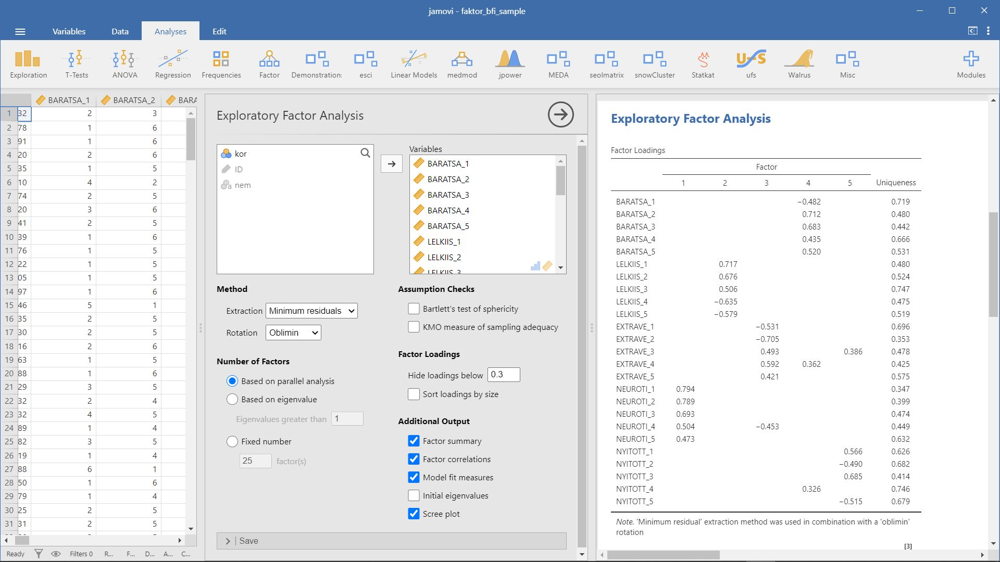